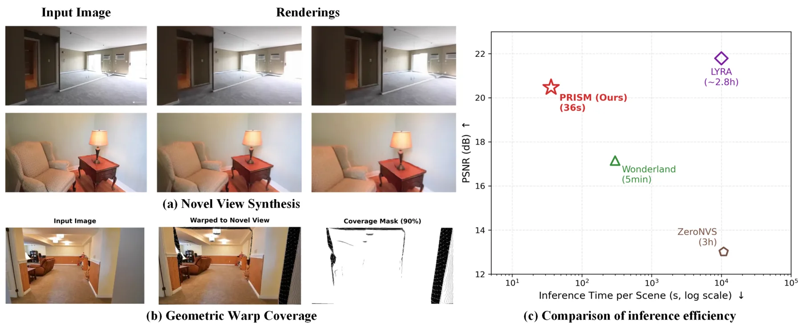
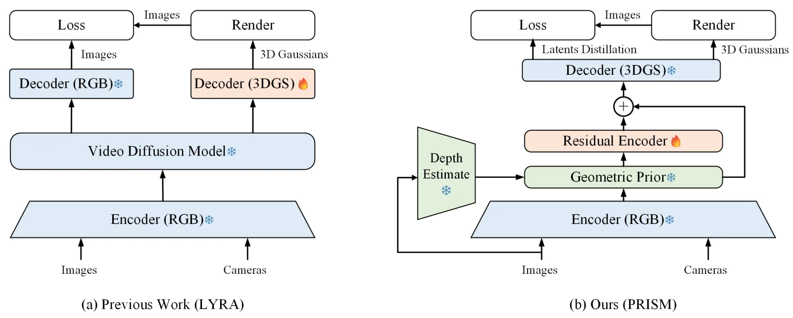
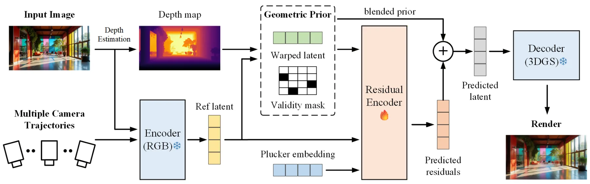
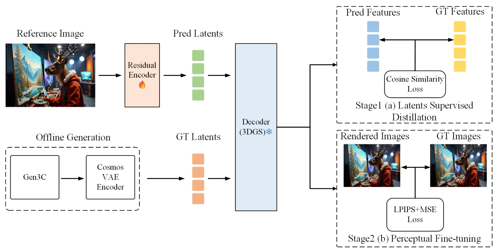
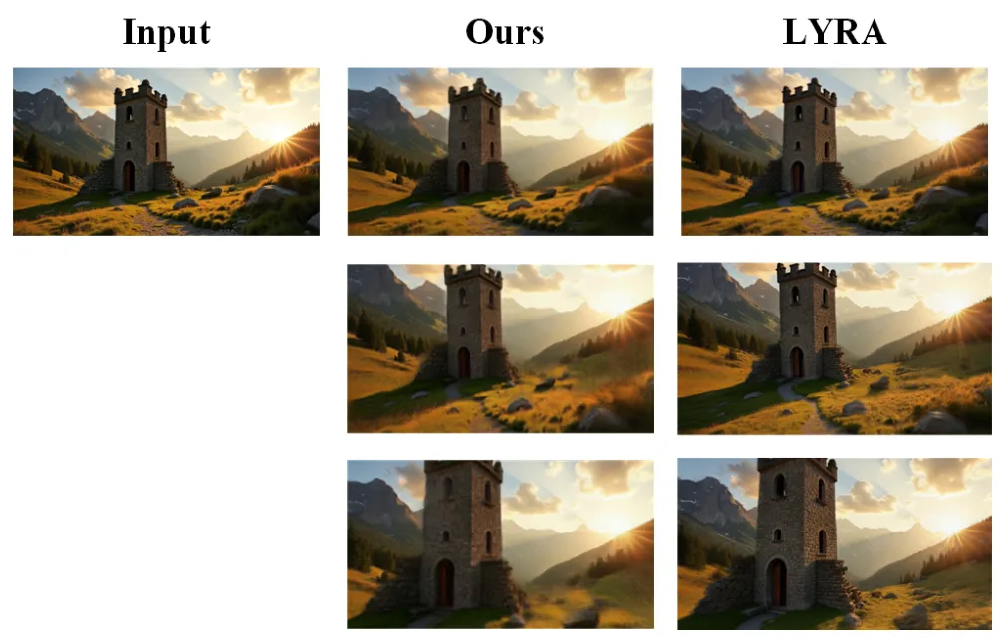
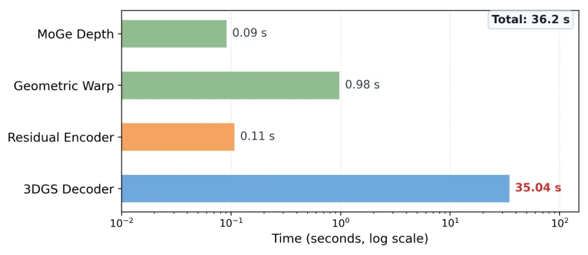
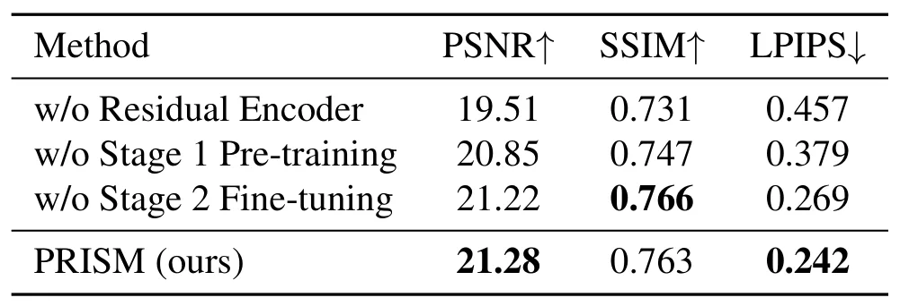
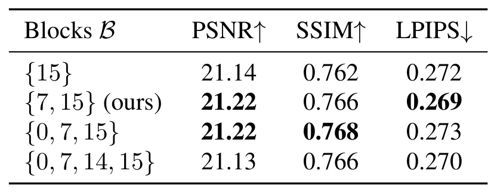
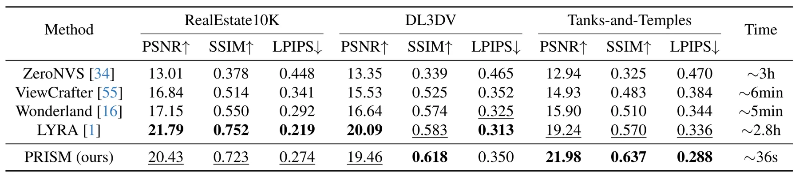

PRISM：基于几何 warp-residual 建模的前馈单图三维重建PRISM: Feed-Forward Single-Image 3D Reconstruction via Geometric Warp-Residual Modeling
偏三维生成/重建而非在线 SLAM，但前馈速度和几何先验设计对仿真资产、场景补全和机器人数据生成有参考价值；需看遮挡补全和多视角一致性。
一句话工作总结
用几何前向 warp 作为无参数先验，再学习少量残差校正，实现无需扩散采样的前馈单图三维重建。
摘要
PRISM 面向单图三维场景重建，试图摆脱相机控制视频扩散模型在推理时需要迭代采样的高成本。作者观察到，几何 forward warping 本身已能从输入图像直接覆盖目标视图的大部分区域，模型主要需要学习紧凑的残差校正。因此，PRISM 将多视角 latent 预测拆成无需参数的几何先验和学习型 residual correction，推理时不需要 diffusion sampling。为提升纯合成训练到真实数据的泛化，论文采用两阶段训练：latent supervised distillation 促进几何泛化，perceptual fine-tuning 优化外观质量。三个 benchmark 上结果显示其质量接近扩散方法，同时单场景推理约 36 秒。
Reconstructing 3D scenes from a single image is a fundamental challenge in computer vision, with broad applications in virtual reality, robotics, and content creation. Recent methods achieve outstanding performance by leveraging camera-controlled video diffusion models, but rely on iterative diffusion sampling, which greatly limits their practical deployment. We observe that geometric forward warping alone can cover the majority of a target view directly from the input image, with only a compact residual left for the encoder to correct. Motivated by this observation, we propose PRISM, a feed-forward framework that decomposes multi-view latent prediction into a parameter-free geometric prior and a learned residual correction, with no diffusion sampling required at inference. To enable generalization from purely synthetic training data, we devise a two-stage training strategy combining latents supervised distillation for geometric generalization and perceptual fine-tuning for appearance quality optimization. Extensive experiments on three benchmarks demonstrate that PRISM achieves competitive reconstruction quality compared with diffusion-based methods, while reducing inference time dramatically to only 36 seconds per scene.
中文解读摘录
- 英文题名：SA-LIVO: Efficient LiDAR-Inertial-Visual Odometry with Subspace-Aware Degeneracy Handling
- 作者：Yinong Cao, Xin He, Yuwei Chen, Shijie Liu, Chunlai Li, Jianyu Wang
- 类别/来源：cs.RO；20 pages, 12 figures, 5 tables；采集 score=15；阅读优先级=9.2/10。
- 一句话总结：在同一个 InEKF 优化环内对 LiDAR-visual 信息矩阵做特征分解，按可观测方向选择性融合视觉约束，让视觉主要补偿 LiDAR 退化方向而不干扰已约束方向。
- 为什么值得看：这篇非常贴近实际 LIVO 系统痛点：LiDAR 在走廊、平面、重复结构中退化，视觉又会受光照/纹理影响。SAIF 的“按 eigendirection 线性夹紧软门控”比传统 modality-level gating 更细粒度；摘要还声称视觉 Jacobian 可在迭代外复用，带来 12.3 ms/frame laptop CPU、26.8 ms/frame embedded ARM 且峰值内存降低 3.6–6.3x。后续应重点复核退化方向判定阈值、和 FAST-LIO/LIO-SAM/视觉直接法基线的公平性，以及代码开源进度。
- 标签：LIVO、LiDAR 退化、子空间融合、InEKF
- 链接：abs / PDF
图表/页面预览
{kind=link}

{kind=link}

{kind=link}

{kind=link}

{kind=link}

{kind=link}

{kind=link}

{kind=link}

{kind=link}
